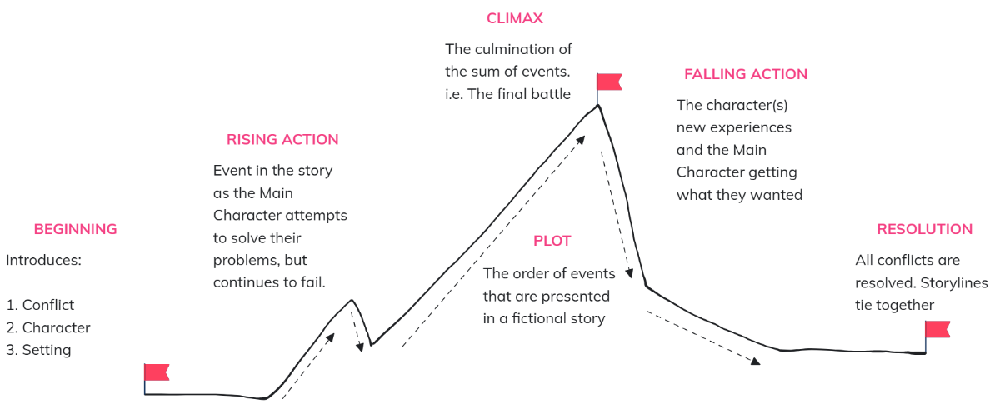
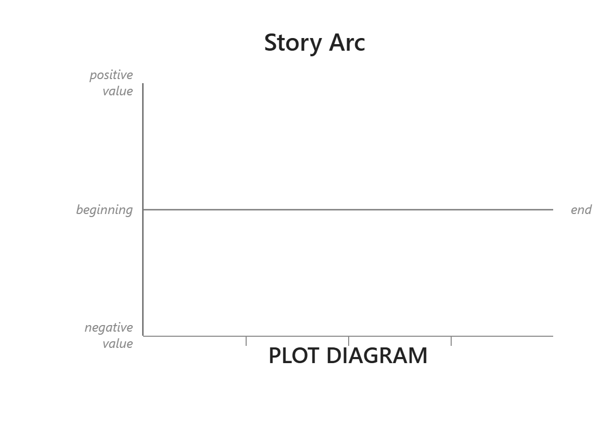
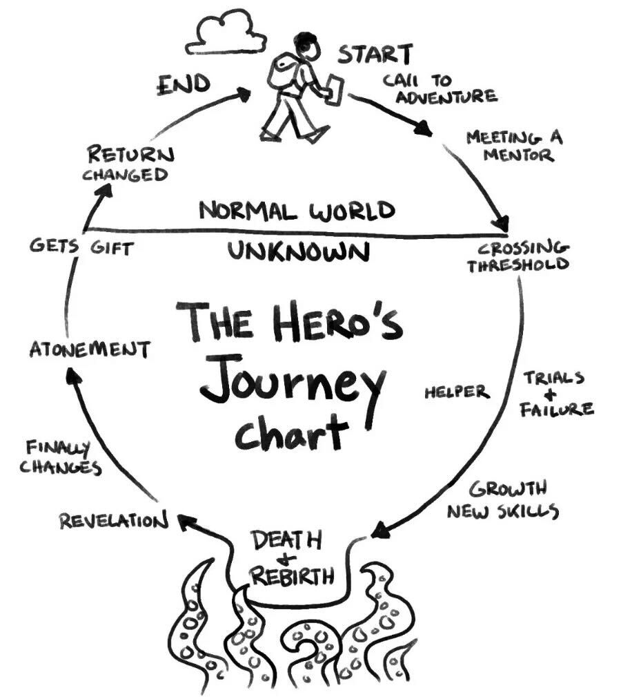
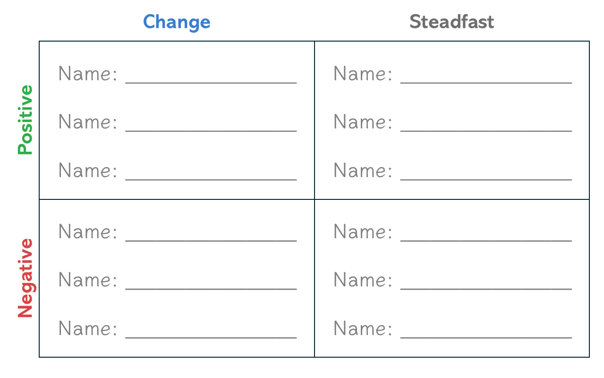

| # | Step | Prompt | Story Beat |
|---|---|---|---|
| 1 | Start | Who’s the story about? | |
| 2 | Call to Adventure | What problem or invitation pulls them into the story? | |
| 3 | Mentor | Who gives them advice, training, direction, or inspiration? | |
| 4 | Crossing the Threshold | What moment sends them into the unknown? | |
| 5 | Trials & Failure | What challenge(s) force them to grow? | |
| 6 | A Helper | Who joins or supports them along the way? | |
| 7 | Growth | What new skill, courage, or lesson do they gain? | |
| 8 | Death & Rebirth | What is their lowest point, where they almost give up? | |
| 9 | Revelation | What truth do they finally understand? | |
| 10 | Finally Changes | What choice proves they have changed? | |
| 11 | Atonement | Who or what do they make right? | |
| 12 | Gift | What have they gained, received, or brought back? | |
| 13 | Return | How does everyday life show that they’ve changed? | |
| 14 | End | Who notices the change, and what is different going forward? |
